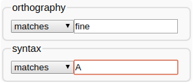

7a. CELEX
LaBB-CAT can be integrated with the CELEX lexicon, which can be purchased from the Linguistic Data Consortium (LDC) and includes lemma, part of speech, morphological, phonological, and frequency information for English, German, and Dutch.
(If you don’t have CELEX, there is an alternative version of this exercise that uses the free ‘CMU Pronunouncing Dictionary’ lexicon, which you can work through instead.)
In this exercise you will:
- Install the CELEX layer manager
- Use it to create new annotations for word morphology, syntactic category, and phonology
- Compute speech rate in syllables per minute
- Incorporate the new layers in more sophisticated searches
Installation
The first thing we’re going to do is install the CELEX layer manager.
This requires having the LDC’s CELEX data files on your computer, which will be processed by the layer manager in order to insert the data into the LaBB-CAT database. If you received the CELEX files in a ZIP file, you need to unzip that into a folder, and remember the location of that folder, as you’ll need it during the installation process.
- First of all, create a new project called CELEX with a description: CELEX Annotations
- Click the layer managers menu option.
- Click the List of layer managers that are not yet installed link near the bottom.
- Find “CELEX English” in the list, and click its Install button.
- You will see a form asking for various details. You can leave most of these with their default values. The one exception is the CELEX ENGLISH data folder option.
Set the CELEX ENGLISH data folder parameter to the directory path that leads to the CELEX files on your LaBB-CAT computer. - Click Install.
You will see a progress bar while the layer manager loads the data from the CELEX files into the LaBB-CAT database. This will take a few minutes. - Once it’s finished, you will see a new window open with information about the CELEX English layer manager.
Reading this information page, you will see some instructions on how to create CELEX annotation layers - leave this tab open for now, as we’re going to need those instructions next.
Morphology
Now that we’ve installed the layer manager, we’ll create our first annotations from CELEX - a layer with morphological annotations.
- Follow the instructions on the information page to create a layer for word morphology - i.e.:
- Layer ID:
morphology - Type: Text
- Alignment: None
- Manager: CELEX English
- Project: CELEX
- Descript
Morphological parses - ...configured with the Morphology option selected, and the default values for everything else.
- Layer ID:
If you’re curious about what the configuration options do, and how you can test out the results of your configuration, check the online help page when you are configuring the layer.
- Once the layer has finished generating, select the transcripts menu option, and open the first transcript in the list.
- Tick the CELEX project, and then tick your new morphology layer.
You will see that each word is tagged with morphological information.
If you were to do a search for words ending in “ing” on the orthography layer, you would get both gerunds like “coming” and also words like “thing” and “anything” whose “ing” is part of the base word, not a morphological affix. You can now tell these apart in searches, by searching the morphology layer for words that end in “+ing”.
- Do a search on the orthography layer of words ending in “ing”. Leave the results tab open, so you can compare these results with the next search …
- Now do a search on the morphology layer of words ending in “+ing”, and compare the results.
Remember that in regular expressions the ‘plus’ character + has a special meaning - it means “one or more of the previous thing”.
In order to search for a literal “+” in the annotation, you have to ‘escape’ the +. Consult the Regular Expression section of the help page to figure out how to do that.
Syntactic Categories
Now we will create a layer for syntactic categories from CELEX.
- Create a new layer for annotating words with their syntactic categories from CELEX:
- Layer ID:
syntacticCategory - Type: Text
- Alignment: None
- Manager: CELEX English
- Project: CELEX
- Description:
All possible syntactic categories - ...configured with the Syntax option ticked, and the default values for everything else.
- Layer ID:
- Once the layer has finished generating, go to the search page and do a search for the word “fine” on the orthography layer.
- Open the transcript of the first match.
- Tick the syntactic category layer to display the annotations that have just been computed.
- Now find your instance of the word “fine” again (it’s highlighted in the transcript text).
You will see that it has “A” for adjective above it. - Click on the word “fine” and select the Edit option on the menu that appears.
Now look for the syntacticCategory layer. You will see that, in addition to “A”, there are several other annotations that are invisible on the transcript.
These are all the possible syntactic categories for the word “fine” ordered most-frequent first. Only the first one is displayed in the transcript, but when you do searches, all of them are searched. - On the search page, do a search for fine on the orthography layer and A on the syntactic category layer in the same column.
This has the effect of ‘ANDing’ together the patterns for a single word, so it will give you words that have “fine” on the orthography layer have A on the syntacticCategory* layer.
 - Do another search, for fine on the orthography layer and V on the syntacticCategory layer.
Notice that the results are the same. This is because all of the instances of “fine” are marked as ‘possibly an adjective’ and also ‘possibly a verb’.
As you can see, simply tagging tokens with all possible syntactic categories from the CELEX lexicon leads to search results that are heavy on false positives. In order to tag tokens with a single syntactic category, we would need to perform ‘disambiguation’ by taking the surrounding transcript into account, in order to decide which of all the possibilities is the correct syntactic category. LaBB-CAT has two layer managers that perform such part-of-speech tagging: the “StanfordPosTagger” and the “MorTagger”. Neither of these use the exact same syntactic labels that are used by CELEX.
Syllable Count and Speech Rate
CELEX can be used to retrieve syllable-counts for words, which in turn can be used, with duration information, to compute speech rate. For each line in each transcript, we already have the start time and the end time, from which we can calculate the duration of the line. All we need now is the number of syllables per line, and we can compute the syllables-per-minute speech rate for each line.
- Create a new word layer:
- Layer ID:
syllableCount - Type: Number
- Alignment: None
- Manager: CELEX English
- Project: CELEX
- Description:
Number of syllables - ...configured with the Syllable count option ticked
- Layer ID:
Ensure the First match only option is ticked for this layer.
If you’re not sure why, this is explained in the online help for the layer configuration page.
- Once the layer has finished generating, have a look at a transcript or two to check the results.
- Click the phrase layers menu option.
- Add a new phrase layer for speech rate. Key points are:
The layer manager to use is the Statistics Layer Manager.
The layer to summarize should be the syllableCount layer.
The statistic to compute is Label-Sum Rate (per minute)
TipIf in doubt, the online help may help.
You can calculate over whatever scopes you like, but if you select Utterances this will give you a local speech rate which might be useful when looking at individual search results, and Participants might be interesting if you want to compare speech rate between speakers.
- Have a look in a transcript or two, and a participant or two, to see what the annotations you just generated look like.
Phonology
Now we’re going to create a phonemic-transcription layer.
- Create a new word layer, called phonemes, similar to previous CELEX layers. Key points are:
- The layer type should be set to Phonological.
- The Phonology option should be selected in the layer configuration.
- Make sure the Pronounce Event Override option is ticked.
This means that if the original ELAN transcript contained a ‘pronounce’ annotation for a word (these are marked in ELAN with square brackets), specifying its pronunciation, then the ‘pronounce’ annotation is used instead of the phonemic transcription from CELEX. - Ensure the Generates Segments option is un-ticked.
This option allows the layer manager to create segment (sub-word) annotations from the phonemic transcriptions, but we don’t want this because in the next exercise, we’re going to get HTK to do that instead.
- Once the layer is finished generating, go to a transcript to see what it looks like.
You will notice that the annotations are displayed using IPA symbols. However, CELEX doesn’t use IPA symbols directly, it actually uses the ‘DISC’ encoding for phonemes, which uses ordinary ‘typewriter’ characters (ASCII), and uses exactly one character per phoneme. The IPA symbols are being displayed by LaBB-CAT to provide a linguist-friendly representation of the phonemic transcription. But you can see the underlying DISC characters by selecting the ASCII option on the layer in the transcript.
- Select ASCII on the phonemes layer, to see what CELEX is actually producing.
You may find that this is somewhat harder to read. Diphthongs are generally represented by digits, schwa is @, and various other characters are used to represent affricates, etc.
It’s nice to display the IPA symbols, but it’s important to understand the DISC symbols (shown in table below, because they are what we have to use when searching on the *phonemes* layer, which we are going to try now.
| IPA | DISC | IPA | DISC | |||
| p | p |
pat | ɪ | I |
KIT | |
| b | b |
bad | ε | E |
DRESS | |
| t | t |
tack | æ | { |
TRAP | |
| d | d |
dad | ʌ | V |
STRUT | |
| k | k |
cad | ɒ | Q |
LOT | |
| g | g |
game | ʊ | U |
FOOT | |
| ŋ | N |
bang | ə | @ |
another | |
| m | m |
mat | i: | i |
FLEECE | |
| n | n |
nat | α: | # |
START | |
| l | l |
lad | ɔ: | $ |
THOUGHT | |
| r | r |
rat | u: | u |
GOOSE | |
| f | f |
fat | ɜ: | 3 |
NURSE | |
| v | v |
vat | eɪ | 1 |
FACE | |
| θ | T |
thin | αɪ | 2 |
PRICE | |
| ð | D |
then | ɔɪ | 4 |
CHOICE | |
| s | s |
sap | əʊ | 5 |
GOAT | |
| z | z |
zap | αʊ | 6 |
MOUTH | |
| ∫ | S |
sheep | ɪə | 7 |
NEAR | |
| ʒ | Z |
measure | εə | 8 |
SQUARE | |
| j | j |
yank | ʊə | 9 |
CURE | |
| x | x |
loch | æ | c |
timbre | |
| h | h |
had | ɑ̃ː | q |
détente | |
| w | w |
wet | æ̃ː | 0 |
lingerie | |
| ʧ | J |
cheap | ɒ̃ː | ~ |
bouillon | |
| ʤ | _ |
jeep | ||||
| ŋ̩ | C |
bacon | ||||
| m̩ | F |
idealism | ||||
| n̩ | H |
burden | ||||
| l̩ | P |
dangle |
- Go to the search page.
- Create a search matrix that’s two words wide, and includes the orthography and phonemes layers.
Now we’re going to do a search for the word “the” followed by a word that starts with schwa.
- Type
thein the first orthography box. - Click the second box on the phonemes layer, but don’t enter anything in the box yet.
- The box has a little
«button to the right of it.
Hover the mouse over it to see what it says, and then click it.
You will see that a section opens with a bunch of phoneme symbols on it. - Find the schwa symbol ə and click it.
You will see that a@symbol appears in the box.
@is the DISC symbol for ə, so in order to search for schwa, we have to use it in our search pattern. - We want words that start with schwa, so type
.*after the@symbol. - Click Search.
You will see that some of the words being matched are words that you might not normally think start with a schwa. LaBB-CAT is matching words against all their possible phonemic transcriptions, so if CELEX has multiple possible pronunciations for a word, and one of them starts with schwa, it will be matched.
You can check this by clicking on a match, and then clicking on the word in the transcript and selecting Edit, which displays all the annotations for the given token.
Now that we have phonemic transcripts, we can do a better job of the search we tried in an earlier exercise – “the” followed by a word starting with a vowel…
- Change your search so that, instead of just
@at the beginning of the word, it matches any vowel.
You could use the square-brackets [] at the start of your pattern, and type all vowel symbols inside them - Note that the vowels in the DISC representation extend beyond a, e, i, o, and u - you should add in all the vowels you see in the list that appears when you expand the IPA helper, including all the diphthongs.
Alternatively, you can simply click the VOWEL link in the ‘Phoneme Symbol Selector’, which will add all the DISC vowels for you, already enclosed in square-brackets.
- Run the search and check that it’s giving you what you expect. Notice that now there are no ‘false positives’ like “the one” that we were getting when searching by orthography alone.
Now that you’ve generated a few different layers, and have seen how the search matrix works, you might want to try out some of the following searches, or invent some others:
- Instances of an article followed by a noun
- Words which have the DRESS vowel as the second phoneme
- The word “the” followed by a word beginning with the phoneme /k/
- Words ending with schwa, followed by words beginning with /p/ or /b/
- Words that begin with “k” in their spelling, but begin with the phoneme /n/
- Words that begin with “k” in their spelling, but do not begin with the phoneme /n/
- Plurals that end in /s/ or /z/ or /ɪz/